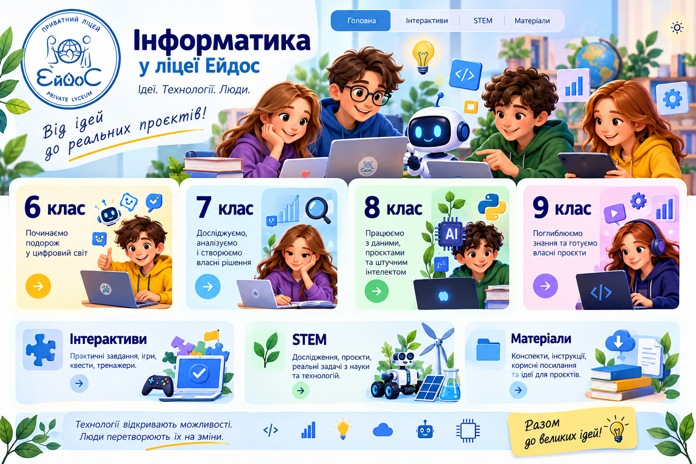

Практичні завдання
Досліджуйте, пробуйте, знаходьте власні рішення.
Нові завдання з'являться тут
Навчальні активності, цифрові проєкти та практичні завдання.
Ігри, тренажери, квести та мініпроєкти — в одному місці.
Досліджуйте, пробуйте, знаходьте власні рішення.
Нові завдання з'являться тутПеревіряйте знання у форматі пригоди.
Розділ наповнюєтьсяСтворюйте власні продукти, а не лише вивчайте інструменти.
Скоро нові практикиДослідження проблеми, запитання до аудиторії, аналіз даних, ідея рішення та коротка презентація. Цей блок — місце для майбутнього інтерактивного уроку.
Окрему сторінку для 7 класу поки не створено.
Наука й технології починаються з допитливого запитання.
Збираємо дані та шукаємо закономірності.
Проєктуємо, перевіряємо й покращуємо.
Пропонуємо рішення для школи й громади.
Добірка для роботи на уроці та вдома.
Тут з'являться короткі пам'ятки для учнів.